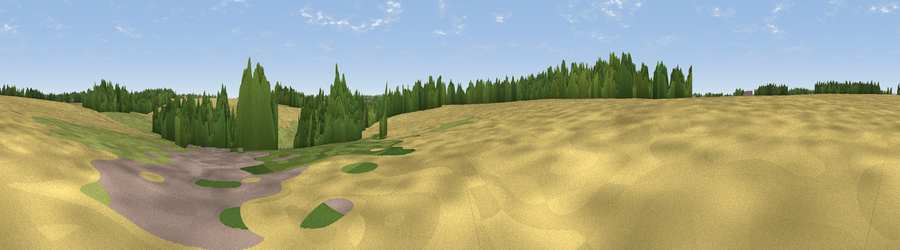

Golden Hill
#45831 in England · top 80% of its area beats it · near GilstonWhere it is
The exact computed spot (TL 43973 13567). Click the marker for map links.
The view, rendered

A 360° render of this exact spot computed from the terrain model, tree cover and land cover — summer colours, afternoon light, calibrated against photographs of famous viewpoints. Real trees, hedges and buildings will differ in detail.
The panorama
Grey silhouette: terrain skyline in each direction (720 bearings, Earth curvature and refraction included). Dashed green: skyline with trees (+15 m) and buildings (+8 m) as obstacles. Blue strip: how far the ground is visible on each bearing.
Where the view opens
Wedge length = distance to the farthest visible ground on that bearing (vegetation-aware). Rings at 10, 25 and 50 km.
What fills the view
57% cropland · 25% grassland · 16% woodland · 2% built-up
Angular shares of the visible panorama (visual magnitude), not map area. Landscape diversity 0.45 (0–1 Shannon).
Key numbers
More beautiful places nearby
The staircase of upgrades: each row has a higher view potential than everything closer. Driving times are estimates from straight-line distance, calibrated against real road routing — check an actual route before setting out.
| Place | Direction | Drive | Score |
|---|---|---|---|
| Pole Hole Hill | SE · 1 km | ~4 min | 20.8 |
| Viewpoint near Great Amwell | W · 6 km | ~13 min | 30.8 |
| Viewpoint near Lower Nazeing | SW · 8 km | ~17 min | 31.8 |
| Viewpoint near Thundridge | WNW · 10 km | ~19 min | 40.8 |
| Viewpoint near Lower Nazeing | SSW · 11 km | ~20 min | 42.5 |
| Viewpoint near Sewardstonebury | SSW · 17 km | ~29 min | 49.8 |
| Viewpoint near Sewardstonebury | SSW · 19 km | ~33 min | 50.3 |
| Viewpoint near Baldock | NW · 27 km | ~43 min | 53.9 |
51.80222, 0.08664 · source: osm peak · position refined by local search. Computed location — check access rights before visiting.